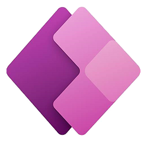

Projet Voltaire
Passage de la certification pendant ma première année de BTS SIO.Certification Dev-Ops
Apprentissage de la certification Microsoft Dev-Ops durant ma deuxième année de BTS SIO.Certification Pix
Passage et l'obtention de la certification Pix pendant ma deuxième année de BTS SIO.Certification Pix
Passage et l'obtention de la certification Pix pendant ma deuxième année de BTS SIO.
